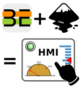

Introduction to SVGHMI¶
|  | SVGHMI is a SVG based HMI toolkit. With it, PLC programmers and HMI designers can efficiently produce Scalable Web Based HMIs. <br /> <br /> HMI design happens in Inkscape. Designer freely draws HMI pages and widgets following WYSIWYG principle. |
WYSIWYG HMI design with Inkscape¶
“What You See Is What You Get, is a system in which editing software allows content to be edited in a form that resembles its appearance when printed or displayed as a finished product.”
—Oxford English Dictionary
Widgets can be selected from customizable widget library and drag’n’dropped directly in Inkscape.

SVGHMI’s Page and Widget roles are assigned to SVG elements by changing objects name and description in Inkscape.

HMI tree scale together with PLC instance tree¶
In SVGHMI, scalability applies to both graphics and data. Once HMI and PLC are associated in a first version of a machine, it is easy to extend both of them simultaneously. In most cases DRY principle applies. PLC code or SVG elements can be re-used and extended.
PLC data exposed to HMI is represented in an “HMI Tree” deduced from PLC program. More precisely, HMI Tree is a simplified subset of POU instances tree. PLC programmer selects variables to be exposed by assigning them a derived HMI_* type. For example HMI_REAL is used instead of REAL to expose a floating point variable.

In order to reduce HMI Tree complexity, structure of POU instance tree is not preserved by default. Only POUs having a single HMI_NODE variable defined appear in HMI Tree. This allows to expose variables that are spread in a complex hierarchy of POUs in a single HMI Tree node.

Re-usable widgets and pages¶
HMI elements are SVG elements whose labels start with HMI:. They can be
widgets or pages, and can point to locations in HMI tree with a path starting
with a /, and with /-separated hierarchical levels.
For example, /THIS/IS/A/VALID/HMI_TREE/PATH.
HMI:Switch@/GREENLIGHT“Switch” type widget bound to a variable named GREENLIGHT at root of HMI tree
Each HMI:Page has a unique name. HMI:Jump and HMI:Back widgets are
used to switch to other pages. PLC can also trigger page change autonomously.
HMI must have at least one SVG element labelled HMI:Page:Home. Home is
a special page name: it will make this page the landing page when HMI is loaded.
HMI:Page:HomeMandatory “Home” page declaration
HMI:Jump:HomeChange current page to “Home” page when clicked
HMI:BackChange current page back to previous page when clicked
Pages and groups of widgets can be dynamically re-based to another compatible HMI Tree location. They can then be be re-used as HMI components, paired with corresponding POU instances on PLC side.
Simple yet powerful widgets¶
Widgets are meant to be as simple as possible. Still, they can become complex when implementing interactions that cannot be broken down into multiple independent widgets.
Meter Widget Template (HMI:Meter) |
Voltmeter (HMI:Meter) |
|---|---|
 |
 |
HMI and pages have their own local variables allowing interaction in between widgets bypassing HMI Tree. For example, position of HMI:Scrollbar can be directly connected to a position in HMI:JSONTable with a page local variable.
How does it work ?¶
HMI’s client and server code is generated during SVGHMI build, based on PLC code and HMI design.
SVGHMI build is part of Beremiz build, available in IDE and command line.